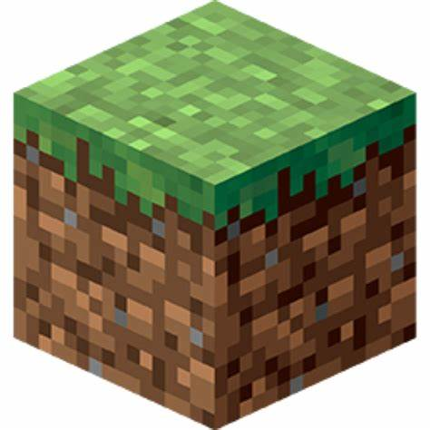

This post was mostly inspired from a one-on-one check in I had with my Front-End Web Dev teacher. The check in was mostly to discuss how I was doing in classes, as well as my future plans. At one point, the topic went to the coding languages of games such as Minecraft. Through this, I learned that Minecraft: Java Edition was coded in Java (kinda obvious when I think about it). Through some quick Google searching, I found out that Bedrock Edition, the other version of Minecraft, was coded in C++. The education edition of Minecraft, which was was intended for school use, was coded off the Minecraft: Bedrock Edition codebase. Something I found interesting was that Java Edition seems to have issues with lag that Bedrock Edition doesn't have, apparently due to Bedrock being coded in an entirely different language.
